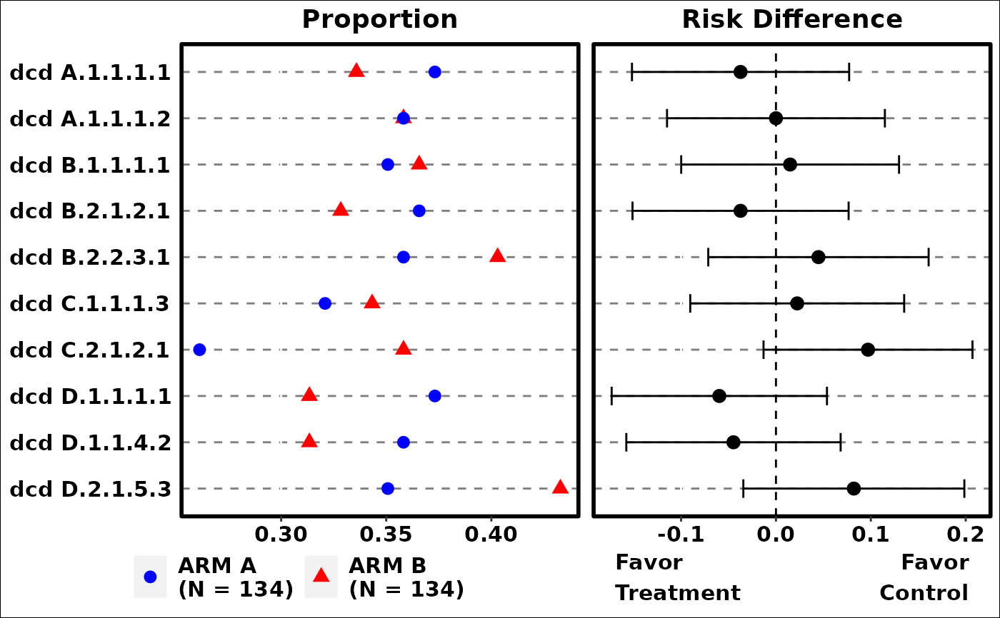
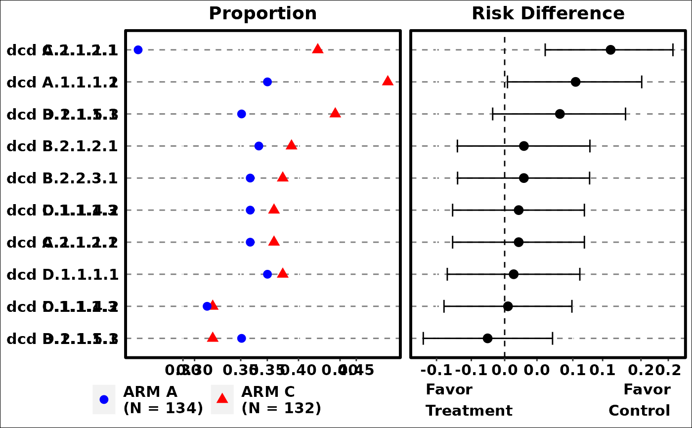
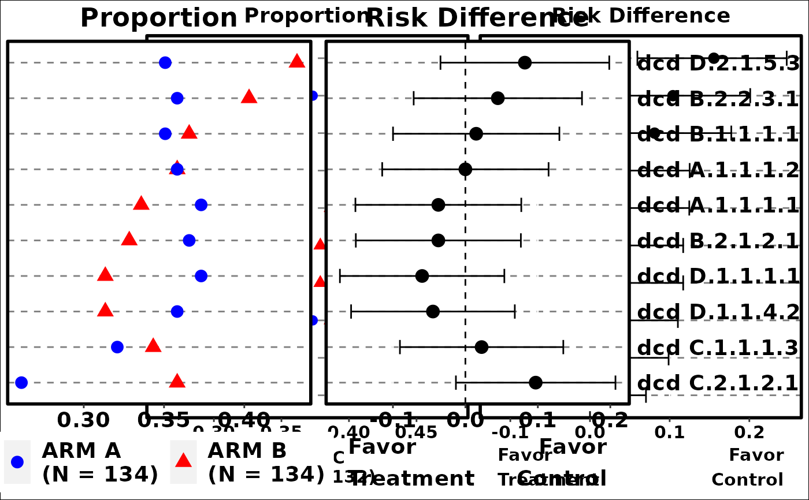
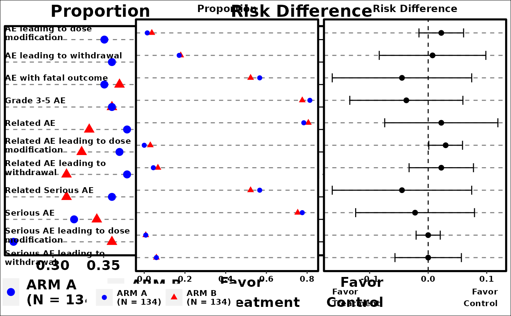

This function plots commonly occurred events by number of unique subjects with events. It creates basic summary of events and compares event occurrences between comparison and reference arms, and can be used for events data such as Adverse Events.
g_events_term_id(
term,
id,
arm,
arm_N,
ref = levels(arm)[1],
trt = levels(arm)[2],
sort_by = c("term", "riskdiff", "meanrisk"),
rate_range = c(0, 1),
diff_range = c(-1, 1),
reversed = FALSE,
conf_level = 0.95,
diff_ci_method = c("wald", "waldcc", "ac", "score", "scorecc", "mn", "mee", "blj",
"ha", "beal"),
axis_side = c("left", "right"),
color = c("blue", "red"),
shape = c(16, 17),
fontsize = 4,
draw = TRUE
)character or factor vector, or data.frame
Represents events information. term can be a data.frame produced
by create_flag_vars, with each column being a logical event indicator
(`vector`)
contains subject identifier. Length of id must be the
same as the length or number of rows of terms. Usually it is ADAE$USUBJID.
(`factor`)
vector that contains arm information in analysis data.
For example, `ADAE$ACTARMCD`.
(numeric vector)
Contains information of the number of patients in the levels of arm. This is useful
if there are patients that have no adverse events can be accounted for with this argument.
character indicates the name of the reference arm. Default is the first
level of arm.
character indicates the name of the treatment arm. Default is the second
level of arm.
character indicates how each term is sorted in the plot.
Choose from "term" for alphabetic terms, "riskdiff" for risk difference, and "meanrisk"
for mean risk. Default is "term".
Numeric vector of length 2. Range for overall rate display
Numeric vector of length 2. Range for rate difference display
logical whether to reverse the sorting by sort_by.
Default is FALSE.
(`numeric`)
the confidence interval level, default is 0.95.
(`character`)
the method used to calculate confidence interval.
Default is "wald". Possible choices are methods supported in BinomDiffCI.
character the side of the axis label, "left" or "right". Default is "left".
Color for the plot. vector of length 2. Color for reference and
treatment arms respectively. Default set to c("blue", "red").
Shape for the plot. vector of length 2. Shape for reference and
treatment arms respectively. Default set to c(16, 17) per
scale_shape.
(`numeric`)
font size for the plot. It is the size used in ggplot2 with
default unit "mm", if you want "points" you will need to divide the point number by
ggplot2:::.pt.
(`logical`)
whether to draw the plot.
grob object
there is no equivalent STREAM output
library(scda)
library(rtables)
library(dplyr)
library(grid)
ADSL <- synthetic_cdisc_data("latest")$adsl
ADAE <- synthetic_cdisc_data("latest")$adae
# add additional dummy causality flags
ADAE <- ADAE %>%
mutate(AEREL1 = (AEREL == "Y" & ACTARM == "A: Drug X")) %>%
mutate(AEREL2 = (AEREL == "Y" & ACTARM == "B: Placebo")) %>%
rtables::var_relabel(
AEREL1 = "AE related to A: Drug X",
AEREL2 = "AE related to B: Placebo"
)
term <- ADAE$AEDECOD
id <- ADAE$USUBJID
arm <- ADAE$ACTARMCD
arm_N <- table(ADSL$ACTARMCD)
ref <- "ARM A"
trt <- "ARM C"
# Example 1
p1 <- g_events_term_id(
term,
id,
arm,
arm_N
)

grid.newpage()
grid.draw(p1)
# Example 2
p2 <- g_events_term_id(
term,
id,
arm,
arm_N,
trt = trt,
ref = ref,
sort_by = "riskdiff",
diff_ci_method = "ac",
conf_level = 0.9
)

grid.newpage()
grid.draw(p2)
# Example 3
p3 <- g_events_term_id(
term,
id,
arm,
arm_N,
sort_by = "meanrisk",
axis_side = "right",
fontsize = 5
)

grid.newpage()
grid.draw(p3)
# Example 4
term <- create_flag_vars(ADAE)
g_events_term_id(
term,
id,
arm,
arm_N,
fontsize = 3
)
